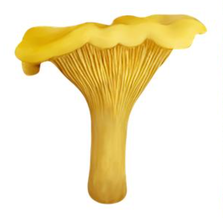

Лисичка звичайна
Лисичка є однією з найпопулярніших їстівних грибів.

Дослідження різноманіття (Тема: Гриби)
Гриби — це особливе царство живих організмів, яке поєднує ознаки рослин і тварин. Вони відіграють ключову роль у екосистемах.
Лисичка є однією з найпопулярніших їстівних грибів.

Білий гриб вважається "королем" грибного царства через свій смак і щільну консистенцію.

Мухомор — це яскравий, але небезпечний представник грибного царства. Він містить сильні токсини, які можуть викликати серйозне отруєння.